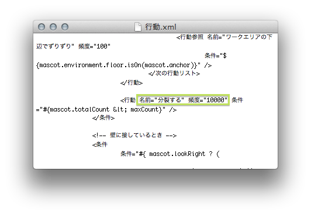

しめじを Mac に移植しました
しめじはデスクトップマスコットです。うろうろしたり分裂したりします。
Mac OS X 10.5 から 10.7 での動作を確認しています。


注意: しめじのファイルを移動させるときはフォルダごと移動してください。アプリケーション本体だけを移動させると起動しなくなります。しめじの大きな特徴である、画像ファイルを差し替えることでカスタマイズできるという機能を維持するために、このような仕様になっています。
Windows 版との違い
- Windows 版では、Internet Explorer など特定のアプリケーションに対してのみ反応しますが、Mac 版では、アプリケーションにかかわらず最も手前にあるウィンドウに反応します。
- Windows 版では、トレイアイコンをクリックすることでしめじを増殖させられますが、Mac 版では、メニューバーのアイコンを右クリック(もしくは2本指タップ)することで増殖させられます。使いづらくてごめんなさい。
- Windows 版では、しめじを個別にばいばいできますが、Mac 版ではできません。ごめんなさい。
しめじのカスタマイズ
Windows 版と同じように、imgフォルダと、confフォルダの中身を差し替えることで、しめじの見た目や動きをカスタマイズできます。
また、Mac 版で作成した画像やファイルは、Windows 版でも同じように使えます。
FAQ
しめじが起動しません
お使いのOSは何ですか? Mac 版しめじは 10.6, 10.7 での動作を確認しています。申し訳ありませんが、それより古いバージョンの OS ではおそらく動作しません。
Java ランタイムはインストールされていますか? しめじを起動するには Java ランタイムが必要です。こちらからインストールできます。
しめじのアプリケーション本体を、zip ファイルが展開されたときのフォルダから移動させていませんか? アプリケーション本体を元の場所に戻すか、 zip ファイルをダウンロードし直してください。
confフォルダ内に"行動.xml"と"動作.xml"が置いてありますか? テキストエディットでそれらのファイルを編集した場合、保存時に自動的に"行動.txt"や"動作.txt"にリネームされるみたいです。拡張子に注意して確認してみてください。
上記のどれにもあてはまりませんか? お手数ですが、製作者にコンタクトを取ってください。
しめじがウィンドウにつかまってくれません
システム環境設定内のユニバーサルアクセスから、補助装置にアクセスできるようにするにチェックを入れてください。
でも邪魔なだけですよ。
お手数おかけして申し訳ありません。
しめじを終了させる方法を教えてください

メニューバーのアイコンをクリックして、メニューからばいばいを選択してください。
分裂してくれません
2012年1月31日以前までの配布ファイルで、設定ファイルが分裂しないようになってました。ダウンロードしなおすか、conf/行動.xmlを画像のように直すかしてください。ごめんなさい。
Windows 版より動作が遅いような気がするのですが
チューニングしたバージョンを試してみてください。そして感想もできれば残していってください。励みになります。
Windows 向けに配布されているしめじを起動したい
起動したいしめじに含まれている、img フォルダと conf フォルダを、Mac 版しめじの置いてあるフォルダへコピーしてください。
開発者の方へ
ソースコードを GitHub で公開しています。よろしかったら遊んでみてください。
フィードバック
nonowarn+shimeji@gmail.comまでどうぞ。
更新履歴
- 2012/06/19 動作には特に変更はありませんが、配布ファイルに入っていたゴミを消しました。
- 2012/01/31 conf/行動.xml の不備で、デフォルトでは分裂しなくなっていたので修正しました。
- 2011/08/24 Dock の方向がわからない環境で落ちてしまう不具合を修正しました。
- 2011/08/24 Dock の位置が右か左の場合、ウィンドウが投げられたときに振動する不具合を修正しました。
- 2011/08/23 公開しました。